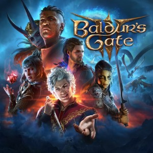
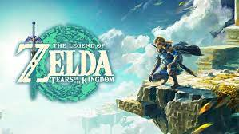
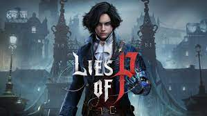
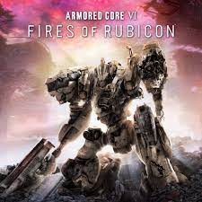

Home
Check out our featured articles, videos, and more.
About Us
We are a small team passionate about gaming content. Open to collaboration, we invite others to join our team and contribute their own blogs to our website to learn more click on contact.

Blog: Top 5 Games to Play This Year So Far..
By Daniel Lopez | November 29, 2023
Baldur's Gate 3
Baldur's Gate 3 immerses players in the iconic Dungeons & Dragons' Forgotten Realms, delivering an epic adventure set in the city of Baldur's Gate. The game boasts a meticulously crafted world, impactful choices, and engaging turn-based combat. Its narrative weaves heart-wrenching decisions, unexpected alliances, and diverse characters, allowing players significant freedom to shape the story. Character creation is extensive, featuring various options, and the art direction, attention to detail, and vibrant city hub contribute to a rich, immersive experience. The game's unique approach to romance, strategic combat encounters, and overall ambition make it a standout in the CRPG genre, surpassing its predecessors and appealing to fans of Dungeons & Dragons and role-playing games.
The Legend of Zelda: Tears of the Kingdom
The Legend of Zelda: Tears of the Kingdom is an action-adventure video game set in the fictional land of Hyrule. Serving as a sequel to The Legend of Zelda: Breath of the Wild, it introduces new elements and expands on the open-world concept. In the game, players navigate a vast and diverse landscape, solving puzzles, battling enemies, and uncovering the mysteries of the world. The narrative revolves around the return of Ganondorf and an event known as the "Upheaval," which has reshaped the Hyrulean landscape. Players take on the role of the protagonist, undertaking a quest to save Princess Zelda and thwart the impending evil. Notable features include a revamped map, vehicle building, weapon crafting, and a dark subterranean region called the Depths. The game maintains the exploration-centric design of its predecessor, encouraging players to discover secrets, face challenges, and immerse themselves in the rich lore of the Zelda universe.
Lies of P
Lies of P stands out in the soulslike genre with its captivating blend of dark storytelling and impressive combat mechanics reminiscent of Bloodborne. The game creatively reimagines Pinocchio's tale in the dystopian city of Krat, offering memorable boss fights and a unique choice system between lies and truth. While the linear level design may disappoint some, Lies of P compensates with a well-crafted skill tree and quality-of-life improvements. The aggressive combat, inspired by Bloodborne, is a highlight, although the absence of multiplayer modes and occasional bugs are drawbacks. The game's exceptional music, including collectible vinyl records, adds to its immersive experience. Overall, Lies of P distinguishes itself with a compelling narrative, engaging combat, and creative customization, making it a standout in the soulslike genre.
Alan Wake 2
Alan Wake 2, developed by Remedy, offers an enthralling blend of survival horror and narrative creativity. Set 13 years after the first game, players control FBI agent Saga Anderson investigating ritual murders in Bright Falls. The game excels in survival horror elements, featuring tense encounters, brutal combat, and resource management. While the mechanics from the first game are present, their integration can sometimes disrupt the flow. Remedy's strength lies in storytelling, offering a meta-narrative that blurs reality and fiction. The game creatively explores narrative twists and character alterations, balancing horror with humor for a unique experience. Alan Wake 2's diverse storytelling techniques, including live-action sequences and interactive investigation corkboards, enhance the narrative. The ability to switch between characters reveals fascinating connections. The game's visual presentation is a technical powerhouse, with detailed graphics and realistic animations. Despite occasional gameplay issues and a complex narrative structure, Alan Wake 2 stands out as a creatively told horror story. Remedy's enthusiasm and willingness to experiment result in an absorbing and memorable experience.
Armored Core VI: Fires of Rubicon
Armored Core VI: Fires of Rubicon plunges players into a futuristic world of intense mech battles. The game features customizable mechs, strategic combat, and a gripping narrative set against the backdrop of the Rubicon conflict. Players engage in adrenaline-pumping missions, upgrading their mechs and making crucial choices that influence the war's outcome. With stunning visuals and immersive gameplay, Armored Core VI promises an exhilarating experience for mech enthusiasts and action game aficionados.
Featured Blogs
| Blog Title | Blog Description | Image |
|---|---|---|
| Best Games Based on Movies | By Nyxx • Jul 11, 2023 Lights, Camera, Action! No doubt, many gamers enjoy the thrill of watching a blockbuster in the theater... |  |
| Best Open World Co-op Games | Evan Regan • Sep 19, 2023 In recent years, the co-op has become left behind in the gaming industry. There was a time when split.. |  |
| Worst Games of 2023 | Gabran Gray • Mar 5, 2023 2023 is going to be full of games that will blow you away. Remakes like... |  |
{kind=link}
Subscribe to Our Newsletter
Stay updated with the latest gaming news and content by subscribing to our newsletter.